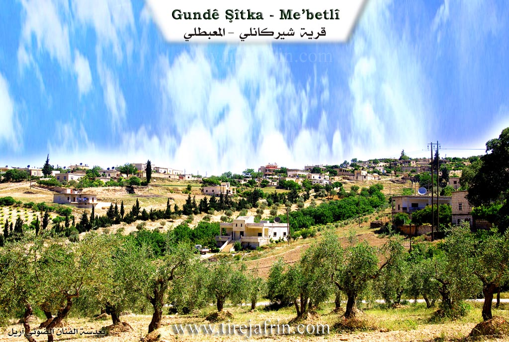
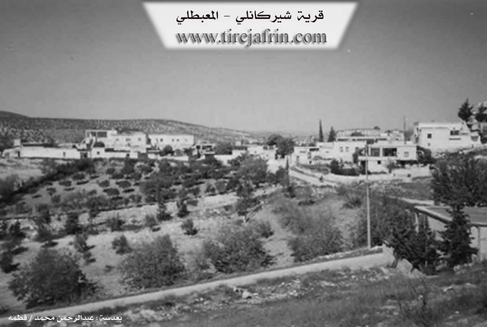

General Information
Nahiya (Subdistrict)
Mabeta
Also Known As
Shirkan, Shirkanli, Şitka, Şitko, Şitûbî, Şîtka, Šîtka, شيتكا, شيركان, شيركانلي, شيتكو
Tribes
Berazî, Zerwar, Zirwar
Families, Clans, etc.
Mala Şerîf, Malbata Elî, Malê Elî, Malê Emînê, Malê Evdê Hesen, Malê Evdî Hecê, Malê Feqê, Malê Hamo, Malê Hemo Jê, Malê Hesen, Malê Kalo, Malê Kalê Jê, Malê Kolej, Malê Kurmo, Malê Kurmû, Malê Şêx Mislim, Malê Şêx Muslim, Malê Şêxê, mala Elî, mala Evdê Heşê, mala Feqê, mala Hemûjê, mala Hemûnê, mala Hesen, mala Kolecê, mala Kurmû, mala Şêx Mislim, mala Şêxê

Photos


Basic Information about Şîtka
Source: Ax û Welat
Caves: Şikefta malê Hesen, Şikefta malê Şêxê, Şikefta malê Feqê
Hills: Çiyayê Mabata
Wells: Bîrê Tel
Source: Khalil Sino
Etymology: According to oral tradition, the name derives from the settlement division between two brothers, Şêrko and Mîrko; one settled here and one settled there, leading to the name Şîtka
Other Landmarks: Bêra Gundê Hisê
Summaries
I. Summary from TirejAfrin Site (English) of Şîtka
According to the book 'جبل الكرد' 'Mountain of the Kurds' (عفرين) Geographic Study by Dr. Mohammed Abdo Ali:
Šîtka (شيركانلي), Shirkanli (شيركانلي), Shirkan (شيركان) /1378n - 314ha - 7km - 640m/:
- Shitka (شيتكا): In Kurdish meaning the active and energetic / Kurani Dictionary (قاموس كوراني). The original name is Jîrka (جيركا) "the active ones", and the letter J was replaced with Š as is common among the Kurds.
- A medium village located on the western slope of a limestone hill.
According to the book: Afrin... Its River and Green Hills by writer Abdul Rahman Mohammed (عبدالرحمن محمد) from Qatmah village (قرية قطمه):
Shirkanli (شيركانلي): A village in Mountain of the Kurds (جبل الكرد), belonging to Mabetli District (ناحية المعبطلي), Afrin City region (منطقة عفرين), Aleppo Governorate (محافظة حلب).
It is a large village located in the central part of Mountain of the Kurds (جبل الكرد), on the western slope of a limestone hill crossed by streams flowing toward the south and west. It is 7km away from Mabetli town toward the southwest. Its soil is fertile clay. It is bounded to the north by a slope and Sili valley (وادي سيلي) and Mirkanli village (قرية ميركانلي) nearby at a distance of 1km, and to the south by a slope and several streams and mountain elevations planted with olive trees and forest trees and Iki Akhur village (قرية إيكي آخور), and to the west by a slope and Sili valley (وادي سيلي) and Jarjam valley (وادي جرجم) planted with walnut and apricot trees and a mountain elevation and Musto Ashur village (قرية مستو عاشور), and to the east by a slope and several streams and mountain elevations and Darker Kabir village (قرية داركير كبير). The number of its houses is about 100 houses and its population is about 500 people. It is one of the old villages in Mabetli District (ناحية معبطلي) and Afrin City region (منطقة عفرين). Its dwellings are stone-clay with flat wooden roofs. It has developed architecturally and modern cement houses have dominated it. There are several magnificent villas on the western side of the village. It has an electricity network, elementary school, mosque, telephone center, and agricultural association. The village drinks from wells and cisterns that collect rainwater. Its inhabitants cultivate rain-fed crops on an area of 244 hectares with grains, legumes, and olive trees, and they cultivate irrigated crops on an area of 70 hectares in the south of the village (sugar beet, summer vegetables, walnuts, and almonds), in addition to raising sheep and goats. There is an olive press in it. It is connected to the district center by a paved road to the center of the village. Its most important families are (Faqih family) (فقه).
Village mayor: Kamal Mohammed Hamo (كمال محمد حمو)
Prepared and implemented by: Tire Afrin website manager: Abdul Rahman Haji Othman (عبدالرحمن حاجي عثمان)
20/12/2013
II. Summary of Şîtka from Ax û Welat
Source: https://www.youtube.com/watch?v=zO1JhpPeV98
The village of Şîtka is located in the Çiyayê Mabata region of Afrin, situated between the neighboring villages of Hisê and Kaxrê. It is a historic settlement with a reputation for independence and communal living; elders note that no Agha ever ruled over the village, and the residents pride themselves on a history of self-reliance and collective labor. The village currently consists of approximately 80 households, though the total population reaches around 1,000 when accounting for those living abroad.
The origins of Şîtka are traced back to two founding families: Malê Kurmo and Malê Evdê Hesen. The Malê Kurmo family originated from Til Hacib in the Kobanî region and belongs to the Zirwar tribe. Another prominent group, the Malê Şêxê (or Malê Şêx Muslim), also arrived from Kobanî and belongs to the Berazî tribe. Other established families include Malê Hamo, Malê Kolej, and Malbata Elî. The host also notes the existence of another village named Şîtka in Tirbespiyê in the Cizîrê region, possibly inhabited by Lûr people, though the residents of the Afrin village are unaware of any direct kinship connections.
In its earliest era, the residents of Şîtka did not live in constructed houses but inhabited natural caves in the area. Elders recount that there were only seven or eight families at the time, each associated with a specific cave, such as Şikefta malê Hesen, Şikefta malê Şêxê, and Şikefta malê Feqê. Over time, they moved from these caves to build homes using timber and earth. The village landscape has also shifted economically; while ancestors relied on livestock and traveled by animal to Heleb (Aleppo), modern residents have transformed the terrain into agricultural land, cultivating olives, walnuts, sumac, and various grapes such as Zeytî, Rûmî, Mirdawî, and Hilwani. Water sources have changed as well; natural springs that once flowed freely have dried up, leading residents to dig wells, such as the Bîrê Tel.
Şîtka is known for its cultural vibrancy and patriotism. The village honors 19 martyrs (pakrewan) who died in various conflicts. It has a rich history of oral tradition and performance. A notable historical figure was Reşîdê Elî, an uneducated but talented poet and actor, whose brother Mecîd was a learned xoca fluent in Turkish, Persian, and Arabic. In the past, famous singers like the dengbêj from Hesnazê would visit to perform for the community. Today, this artistic spirit continues through the Şehîd Viyan theater group, directed by Emîn, which has been active for over 35 years performing plays, folk dances, and songs that reflect social realities. The village women also maintain strong traditions of food preparation (zexîre), working collectively to produce staples like dimis, leçer, and dried vegetables for the winter.
II. Summary of Şîtka from Ax û Welat 2
Source: https://www.youtube.com/watch?v=ZCN8orV4i0g
The village of Şîtka is located in the Efrîn region, specifically in Çiyayê Kurmênc, situated between the villages of Hisên and Kaxrê. It is a historic settlement described by residents as having ancient roots. Currently, the village consists of approximately 80 households with a registered population of around 1,900 people, though many residents are currently living abroad. The village is governed by a council led by Şkero, who explains that the settlement was established long ago and originally consisted of cave dwellings before houses were built from soil and wood.
The social structure of Şîtka is defined by specific family migrations. According to oral history, the first two families to arrive were Malê Kurmû and Malê Evdî Hecê. The Malê Kurmû family migrated from Til Hacê in the Kobanê region and belongs to the Zirwar tribe. Another significant lineage, Malê Şêx Mislim (also referred to as Malê Şêxê), belongs to the Berazî tribe and also originated from Kobanê. Other established families include Malê Hemo Jê, Malê Kalê Jê, and Malê Elî. In the earliest days of the village, there were only seven or eight households, and they lived in specific caves that served as homes. These landmarks are still remembered by name, including Şikefta malê Hesen, Şikefta malê Şêxê, Şikefta malê Feqê, and Şikefta malê Emînê.
Residents emphasize that Şîtka was never ruled by an Axa (feudal lord); instead, the community prides itself on an egalitarian and collective spirit. The local economy has evolved significantly over time. Elders like Apê Ehmed recount that the area was once covered in brush and wild forests, and the ancestors worked as charcoal burners (komircî) to clear the land. This transition led to the cultivation of olive trees, vineyards for grapes and molasses (dims), and sumac. The villagers prioritize self sufficiency, digging their own wells, such as those at Bîrê Tel, after natural springs dried up.
Şîtka is also known for its cultural heritage and patriotism. The village has sacrificed approximately 20 Şehîd (martyrs) for the Kurdish cause. The community maintains a strong tradition of arts and oral literature. A celebrated figure from the past was Reşîdê Elî, an uneducated but talented poet and actor who would host visiting Dengbêj singers like Hesnazî. This artistic legacy continues through the Şehîd Viyan theater group led by Emîn, which performs plays addressing social issues, and through the younger generation, represented by children like Sidra and Rûbîn who recite poetry about their homeland and the YPG.
II. Summary of Şîtka from Ax û Welat 3
Source: https://www.youtube.com/watch?v=K1ockAF_UkM
The village of Şîtka is located in the Mabetan mountain region of Efrîn, situated between the villages of Hesen and Kaxrê. Described as an ancient settlement, its history began with the arrival of two primary families: mala Kurmû and mala Evdê Heşê. The mala Kurmû lineage belongs to the Zerwar tribe and migrated to the area from Kobanê, specifically from Tilhacê. Another prominent lineage, mala Şêxê (also referred to as mala Şêx Mislim), belongs to the Berazî tribe and also originated from Kobanê. Other established families in the village include mala Hemûjê, mala Kolecê, and mala Elî.
In its earliest era, the residents of Şîtka did not live in constructed houses but dwelled in caves. This troglodytic past is preserved in the names of specific caves that served as homes for different lineages, including şikefta mala Hesen, şikefta mala Şêxê, şikefta mala Feqê, and şikefta mala Hemûnê. Over time, the community transitioned to building homes using timber and earth before modern cement structures existed.
Historically, the village economy relied heavily on charcoal production at a site or through an activity referred to as Kûmircî. Villagers produced charcoal to sell in Heleb, transporting it by animal. This trade was a communal effort involving Şîtka and surrounding villages. Following the charcoal era, the agricultural focus shifted to olive cultivation, vineyards, and various fruits such as cherries, apples, and sumac. The villagers emphasize a philosophy of self-sufficiency (e'tîmadê mal ser nefsê me ye), producing their own food reserves for winter, including dried vegetables, grape molasses (dims), and sumac.
Culturally, Şîtka has a rich oral tradition. A notable historical figure was Reşîtê Elî, an illiterate but talented poet (şaîr) and artist who created theatrical representations. His brother, Mecîd, was a learned scholar (xoce) fluent in Turkish, Persian, and Arabic. The village was also a destination for traveling bards, such as the dengbêj Hesen Nazê, whose visits would draw the entire community to gather and listen. Today, this artistic spirit continues through the Şehîd Viyan theater group, led by Emînê Naskir, which performs plays addressing social issues.
The village currently consists of approximately eighty households with a population of around one thousand, though many reside elsewhere for work. Şîtka is noted for its patriotism and sacrifice, having given nineteen martyrs (pakrewan) to the conflicts in the region.
II. Summary of Şîtka from Khalil Sino
Source: https://www.youtube.com/watch?v=KGhOashBALk
The village of Şîtka is located in the Mabatê district of the Afrin region, situated approximately five kilometers from the district center. It sits near the crossroads between Gundê Hisê, Kaxrê, and Birîmce. According to local oral history recounted by the resident Îsam, the origins of the village are linked to two brothers named Şêrko and Mîrko. The legend states that these brothers divided the land between themselves, with one settling in the area of the current village and the other nearby. The name Şîtka is believed to stem from this partition and settlement process.
Historically, the social structure of Şîtka is distinct from its neighbors. While nearby villages like Gundê Hisê and Birîmce were known to have Aghas (feudal lords), the residents of Şîtka maintain that they never had an Agha class. The villagers view themselves as socially equal. The village currently comprises about seven or eight large families, though specific family names are largely unmentioned in the transcript, with the exception of Malê Kalo, a family noted for owning one of the old manual olive presses.
The village has undergone significant changes in its infrastructure and daily life over the decades. Education in Şîtka has humble roots; elders recall that schooling originally took place inside caves (şikeftan) before a formal school building was established. Religious life centers around the local mosque, Camiya Şîtka ya Selahedîn, which was constructed in 1984. Economically, the village relies on agriculture, specifically the cultivation of olives, walnuts, apricots, and sumac. In the past, commerce was more vibrant, with a busy market located on the threshing floor of the neighboring Gundê Hisê (Bêra Gundê Hisê), though this market no longer functions.
Water management was historically centered around a "delîb" (a water wheel or well mechanism) located in the middle of the village. While the structure still exists, it has fallen out of use as modern infrastructure replaced traditional methods. Like many villages in the region, Şîtka has a significant diaspora population. Many younger generations and families have emigrated for work or due to displacement, settling in Heleb, Libnan, and various European countries, including Rûsya, Elmanya, and Swêd. Despite this dispersal, the remaining residents maintain a strong connection to their land and the agricultural cycles that define their heritage.
Transcriptions and Subtitles
| Source | Video | Subtitles | Transcript |
|---|---|---|---|
| Ax û Welat 1 | Watch Video | Download SRT | View Transcript |
| Ax û Welat 2 | Watch Video | Download SRT | View Transcript |
| Ax û Welat 3 | Watch Video | Download SRT | View Transcript |
| Khalil Sino 1 | Watch Video | Download SRT | View Transcript |
Foundation/Origin Information of Şîtka
The village traces its origins to two founding brothers, Şêrko and Mîrko, who also established the neighboring village of Hisê. This close historical bond is further evidenced by their shared cemetery.
Source: Halil Sino Transcript
V. Links
- Tirejafrin:
http://www.tirejafrin.com/site/kura%20afrin%20%20%20mebetli%20-%20shitka.htm - Ax û Welat:
https://www.youtube.com/watch?v=ZCN8orV4i0g - Video:
https://www.youtube.com/watch?v=J_zsJgHJru0
https://www.youtube.com/watch?v=eAQ4ZV5t6Jo
https://www.youtube.com/watch?v=ZCN8orV4i0g
https://www.youtube.com/watch?v=K1ockAF_UkM - Ax û Welat:
https://www.youtube.com/watch?v=zO1JhpPeV98 - Khalil Sino:
https://www.youtube.com/watch?v=KGhOashBALk